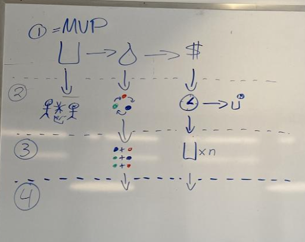
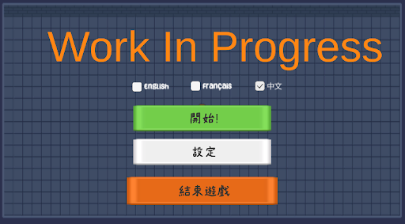
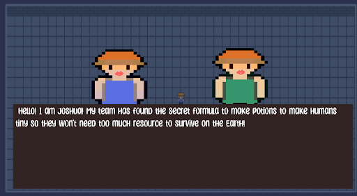
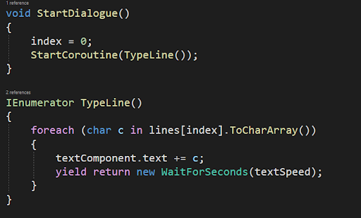
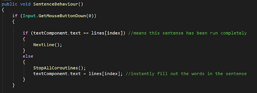
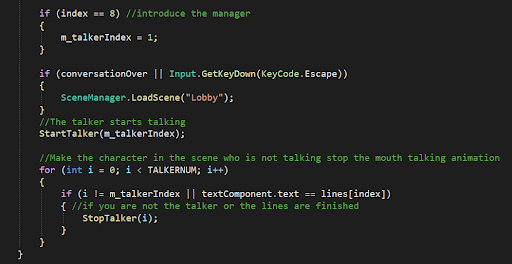
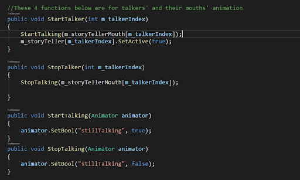

After our team meeting, we decided to outsource the art assets in our game, so I changed the tasks I was working on to make the story scene, so the players can know the background story of the game.
I worked with Dorian, Joshua, and Ethan to brainstorm our story. They shared some ideas like time travellers, real railroad history in Cornwall, aliens from outer space….etc. I was happy that people were passionate about it and in the meantime, they trusted me to write the story. After I finished the story, I checked with Ethan to make sure my grammar was good and the content in French was correct.
The story:
Players can receive recipes from the future to craft potions. Players receive a message: In 2158, the population will reach 500 billion! People need to alter their DNA with recipes from the future to make themselves smaller so the planet can hold that many people. We need someone to concoct these potions now before it is too late!
Then on March 2nd, we had a school trip to Snowed In Studio in Ottawa. We met our mentors in person, and we had a really nice meeting talking about which direction we should take in our game development. We improved our workflow and game design, which meant a lot of things need to be cancelled and restarted from scratch. We were glad that finally we knew which way to go!
I added the language Mandarin into our localization system. The issue I met was that some characters could not be printed out correctly in the game, even after I added the character manually into the fonts, it still could not be solved, so I changed the content to avoid using certain words to avoid such issues.
Another interesting challenge I met while putting Mandarin into the game was changing the font. Since when players choose different languages they prefer, the font in Mandarin has to be different, so I used a function to track all Text Assets in the scene and change its font.
Then I built the story scene. It works as characters show up and tell the story. I made a mouth animation, and it will only move when the character is still talking and the animation will stop once the character’s line is finished.
The lines are going to be shown by typing out.
The SentenceBehaviour function is running in a loop. Once a player clicks, then moves to the next line or just finishes the line.
Check which character is talking.
These four functions are to set the mouth moving animation.
After the story scene was finished, I jumped into the Jenkins settings. I watched some tutorial videos on YouTube before, but this was my first time putting the knowledge I learned into practice. Now there are still some blocking errors which I don’t know how to solve, but I will keep working on it, and I am sure I can figure it out soon.